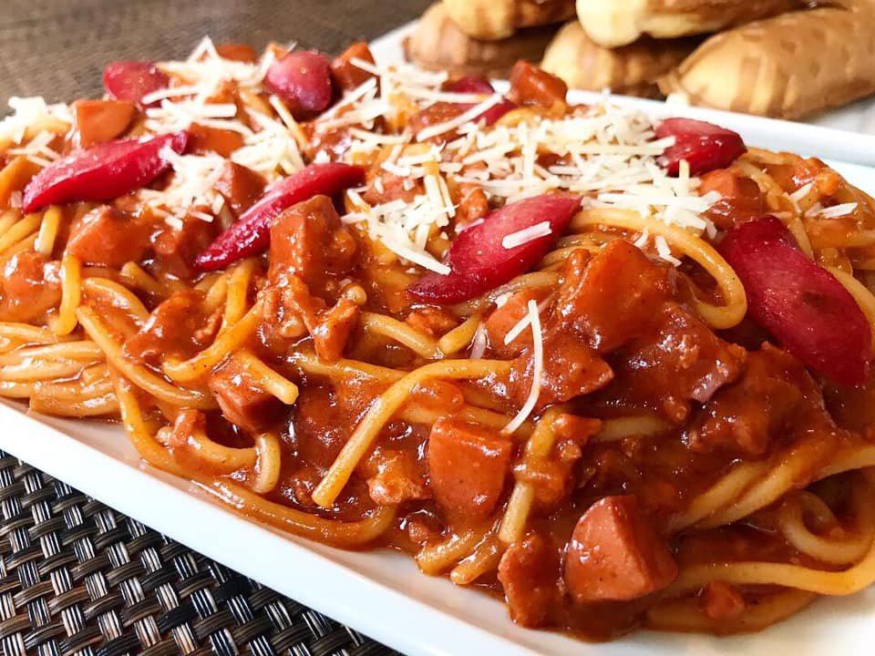

Spaghetti Recipe

Description:
Filipino-style spaghetti is an interesting take on the Italian bolognese.
Made with banana ketchup and hot dogs, it strays quite a bit from the norms of other pasta dishes.
It's got a lot of meat, and is sweet and savoury. It's a perfect dish to munch on anytime you're hungry
Here is the list of ingredients needed to make this wonderful dish (8 servings):
- 1 pound uncooked spaghetti
- 1 tablespoon oil
- 4 Filipino-style hotdogs, sliced diagonally
- 1 onion, peeled and chopped
- 3 cloves garlic, peeled and minced
- 1 bell pepper, seeded, cored and chopped
- 1 pound ground beef
- 2 cups tomato sauce
- 1/2 cup tomato paste
- 1 cup banana ketchup, preferably sweet and spicy
- 1 cup beef broth
- 1 teaspoon sugar
- salt and pepper to taste
- 1/2 cup quick-melt cheese, shredded
And now, here are the instructions to make the dish:
- In a pot over medium heat, cook spaghetti in salted boiling water according to package’s direction for about 7 to 9 minutes or until firm to bite. Drain well.
- In a large saucepan, heat oil. Add sliced hot dogs and cook, stirring occasionally, for about 1 to 2 minutes or until lightly browned. Remove from pan and set aside.
- Add onions, garlic, and bell peppers to pan. Cook until softened.
- Add ground beef and cook, stirring occasionally and breaking into small pieces until lightly browned. Drain any excess fat.
- Add tomato sauce, tomato paste, ketchup, and beef broth. Stir in sugar.
- Bring to a boil and then lower heat to simmer, covered, for about one hour or until meat is fully cooked and sauce is thickened.
If the sauce is getting too thick, add water in 1/2 cup increments as needed.
- During the last 10 minutes of cooking, add browned hot dogs. Season with salt and pepper to taste.
- To serve, spoon spaghetti sauce over noodles and top with shredded cheese.